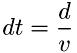
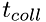
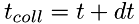
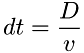
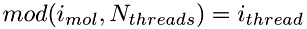
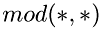

Implementation
Implementation
Collision Detection Scheme
The discretization scheme is based on the combination of the linked cell method (Sec.Linked-Cell Method) with a space-time collision detection scheme (Sec.Space-Time Collision Detection Scheme ), which enable to significantly accelerate the execution of the method. To better understand the principle of the method, it has to be compared with the standard time-advancement scheme.Standard Time-Advancement Scheme
In a standard scheme all molecules are advanced using a single global time step. This time step is selected as the minimum time for a molecule to move at the distance of its radius:

where 'd' is the on the order of molecule radius and 'v' is the velocity of a molecule. The minimum is sought for all molecules. After each time step the relative positions of all molecules are analyzed to determine if there are any overlaps (collisions) between pairs of molecules.
This choice of time-step, dt, above guarantees that no molecule will miss a collision event. However, since each molecule usually travels much longer distances than its length between the collisions, this scheme leads to unnecessary many steps calculations for an essentially straight trajectory path between the collisions as illustrated in the figure below.
Standard time-stepping involves many unnecessary calculations
Also, the time step is selected with respect to the smallest molecule, which usually also have the highest velocity. Thus, in the case of a gas mixture, this time-step will be excessively small for bigger and slower moving molecules.
Considering this, and the fact that the molecules travel on straight paths between the collisions, the standard scheme is very inefficient, since it does the majority of computations for molecules undergoing no collisions, but rather traveling on straight paths.
Space-Time Collision Detection Scheme
In the new collision detection scheme instead of moving all molecules with the same time step, attempts to move each molecule directly to the site of next collision, avoiding any calculations on the straight path, as shown in the figure.
Collision detection moves molecule directly to the site of next collision
using a single global time step for all molecules, each molecule has it's own time, and its own time-step. Thus, instead of a 3D position vector and velocity vector, the kinematic parameters for each molecule include a 4D space-time vector (x,y,z,t), velocity vector, (vx,vy,vz) and the time step, dt. The time-step for each molecule is is calculated as the time to the next collision. Thus, one can estimate the time of the next collision event, , for each molecule by adding its current time to its current time step:

The time-steps of molecules are constantly updated within the loop, where all pairs of molecules are analyzed for possible collisions on the basis of their velocities and radii. If the molecules are found to be heading for a collision, then the time of that collision event is compared to the currently estimated next collision time for each molecule. The time-steps for the molecules are updated if the new collision event is found to occur earlier than both estimated collision events for each molecule. This results in selection of the earliest possible collision events. The collision events also include the collisions with the walls.
In the same loop where the molecular time-steps are updated using collision-detection scheme, the actual collision events are processed for those molecules which are found to be within the interaction distance from each other. In the course of collision molecules change their velocities in compliance to momentum and energy conservation, as well as exchange their kinetic and internal energies according to the equipartition principle, that is, the total energy is equally distributed among the combined degrees of freedom of two molecules.
After the time-steps of all molecules are updated and collisions processed in the collision-detection loop, the molecules enter the time-advance loop, where each molecule is advanced by its time-step to its nearest collision event. These two loops are iterated over and over until the termination time for the simulation.
It should be noted, that the described scheme will not work well, if the times of all molecules start deviate from each other by too large a value, causing some molecules to go too far ahead in time compared with other molecules. Thus, it is necessary to periodically synchronize the molecules, by bringing them all to the same time level. This is done by introducing the global time step, such that all the molecules exceeding the next global time level will not move to the next collisions until all the molecules reach that time level. Then the global time level is incremented by the global time-step and the procedure is repeated. The value of the global time step is selected on the order of molecular mean-free-path:

where 'D' is on the order of several mean free-path lengths (or inter-molecular distances). This choice guarantees that the molecular collision times will not go out of sync by too much to cause miscalculations in collision events.
Even though the current scheme is still relying on a global time-step, this time step is by far larger than that used in the standard time-stepping scheme discussed above. This is because in the standard scheme the global time-step is based on molecular size, and in the current scheme it is based on inter-molecular distance, which is far larger than the size of the molecule:  . This leads to significant speed-up of calculations compared to the standard time-advance scheme.
. This leads to significant speed-up of calculations compared to the standard time-advance scheme.
Linked-Cell Method
ReMoDy uses interaction acceleration scheme based on linked-cell technique, which is a variant of Verlet list method [Verlet L (1967). Phys. Rev. 159: 98-103]. In this method the whole computational domain is divided into box-shaped cells. Only interactions between the molecules from the same or adjacent cells are considered (see Figure).
Grid of Cells for Local Interaction Acceleration
The size of the grid cells is selected by optimizing the execution speed, and is usually on the order of several mean-free-paths. The method enables to achieve near linear dependence of execution time on the number of molecules. In contrast, looping over all molecules makes execution time proportional to the square of the number of molecules, which makes that impractical for large number of molecules.
Multi-Processor Implementation
The code can be made to run in parallel on multi-core workstations. It uses the shared-memory OpenMP library to distribute processing of the molecules time-advancement and interaction loops among the available CPUs.The two time-critical loops which run in parallel are time-advancement loop, implemented in subroutine Domain::step(), and interaction loop implemented in Domain::interaction() routine. Before the loops are entered the molecules are indexes sequentially. Each OpenMP thread selects the molecules which has index satisfying the criterion:

where  is division by modulus. This way all molecules are distributed equally between active threads. The number of threads is selected as the maximum between the available processors, and the pre-defined constant 'nthreads'.
In addition to this, in the interaction loop, the locking mechanism is used to prevent simultaneous processing of the same molecules by more than one processor. This can happen because the interaction procedure considers all pairs of molecules, which is done in a double-looping over all molecules. Thus, the selection of molecules from the primary loop, using the mechanism above will not prevent the possibility of simultaneous processing of the same molecule from the secondary loop by more than one processor. The locking mechanism operates by introducing the 'is-locked' flag for each molecule. Inside the nested loop the molecule is considered only when its state is not locked. If this is the case, then the molecule is temporarily locked while its interaction with the primary molecule from the main loop is being processed.
Dynamic Lists
The main data-structures holding molecules are dynamic lists: Collection and Container. Collection is a double-linked list of fixed number of items, with two pointers for each item, pointing to the next and the previous item. The list consist of two parts: active and dead. Each part forms a loop, such that following next or previous pointer from any element across the list will lead back to the same element. The procedure of moving elements between the active and dead parts is very simple, involving only several pointer reassignment operations. The figure below illustrates the operation of removing the active molecule from the computational space and assigning it to the pool of "dead" molecules.
Collection Class
The reverse procedure of "resurrecting" dead molecules and introducing them into the active pool is done in the same manner. This technique enables to avoid expensive memory allocation/deallocation operations, and save time on looping over the list of molecules, since all dead molecules are not in the active list, and are completely ignored by the looping procedure. Thus, no conditional if-statements are necessary, and shorter list sizes can be used.
The Collection class is convenient for the dynamic storage of a single collection of items, and is used to store all the molecules in the domain.
Container is a variable size list of pointers to items. Like a Collection it is also a double-lined list with the next and previous pointers for each item. But unlike a Collection, the Container all container lists share the same pool of dead items, or pointers, which can point to any item. Each container list can acquire items from the pool or return them back to the pool.
Containter Class
The Container list is convenient to store multiple lists of items where the number of items constantly change. Container lists are used in the implementation of the linked-cell method described below.